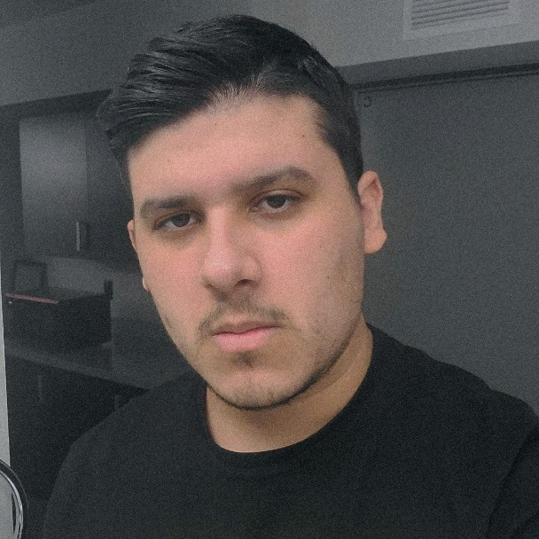

Our Team:
Clinton Hoang - Developer
Dante Ricketts - Scrum Master
 |
I am a Junior in the Computer Science Major at FAU. I moved to America from Jamaica in 2015. I didn't really know what to pick with what career i'd do in the future until senior year in highschool when I got interested in coding and decided to stick with it. Some of my hobbies include gaming,reading and watching shows and recently started getting back into soccer. |
Lauren Morlock - Developer
 |
I'm a senior computer science student at FAU. I tend to like the "mathier" parts of computer science -- things like machine learning, quantitative development, and algorithms. My hobbies include playing video games, reading, and watching movies. |
Yurixander Ricardo Silva - Product Owner
|  |
I'm a self-taught, passionate full-stack and software developer, currently in my junior (almost senior) year here at FAU. My favorite topics are compiler design, functional programming and type theory. My hobbies are cycling, and Chess. |
Zee Fisher - Developer

|
I am a Junior Computer Science student at FAU, I'm 22 years old and I've been interested in CS since middle school. My interest is in the field of machine learning, AI, and data science; However, I am always interested in learning new fields of CS if the opportunity arrises. My hobbies include reading, watching cartoons, playing games/sims, and some art as well. |